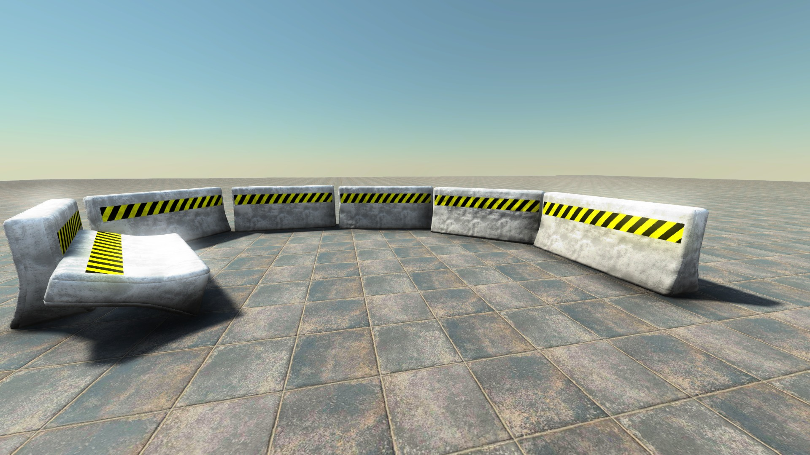
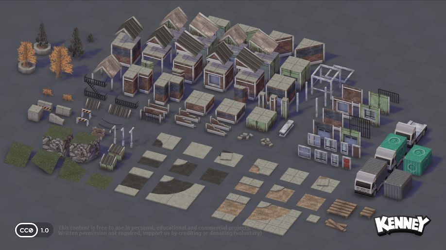

Concrete barrier（混凝土护栏）
黄黑警示条纹的水马护栏，带拐角模块。贴图写实（2048² PBR），风格偏真实，做 PS1 需重做贴图。260 tris。
OpenGameArt · opengameart.org/content/concrete-barrier（9.3 MB）

Retro Urban Kit ⭐
破旧街区整套：路面块、铁护栏、路障、栅栏、旧房、卡车。风格粗粝做旧，最接近 PS1 废土感。100 个模型。
Kenney · kenney.nl/assets/retro-urban-kit

Traffic Road Assets（完整大图）
和 01 区第一张是同一套，这是原始大图。能看到成排的护栏模块、交通锥、路灯杆，等距视角，配色鲜艳。
OpenGameArt · opengameart.org/node/133935